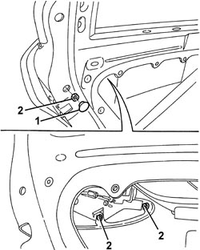
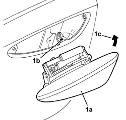

7010C10 REAR SIDE DOOR EXTERIOR HANDLE - R.R WITH DOOR PANEL REMOVED
- Path
- Procedures > 70 FITTINGS > 7010 PASSENGER COMPARTMENT REAR SIDE DOORS > 7010C REAR SIDE DOOR LOCK CONTROLS > 7010C10 REAR SIDE DOOR EXTERIOR HANDLE - R.R WITH DOOR PANEL REMOVED
- Kind
- repair procedure (removal / refitting; the operation number is the code)
- Applies to
- all engines; all production periods
- Interactive page
- https://sloeber94.github.io/elrnDB/alfa/159/en/#/939011167
Applies to: all engines; all production periods
 Removing
Removing
 Refitting
RefittingOp. 7010A08 REAR SIDE DOOR INTERIOR SUPPORT FRAME - R.R. WITH DOOR PANEL REMOVED
1. Release the trim cover.
2. Undo the exterior handle retaining nuts.

Applies to: all engines; all production periods
1. Lift up the handle (1a) to release the lower retainer from the housing (1b), then extract it turning in the direction of the arrow (1c).

Applies to: all engines; all production periods
Refitting
Removing- Check that the exterior handle is not damaged.
- Fit the exterior handle in its housing, attaching the lower retainer in the housing in the door.
- Tighten the handle retaining nuts.
- Fit the trim cover.
Op. 7010A08 REAR SIDE DOOR INTERIOR SUPPORT FRAME - R.R. WITH DOOR PANEL REMOVED